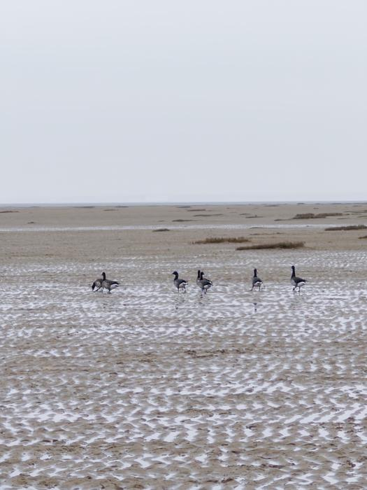
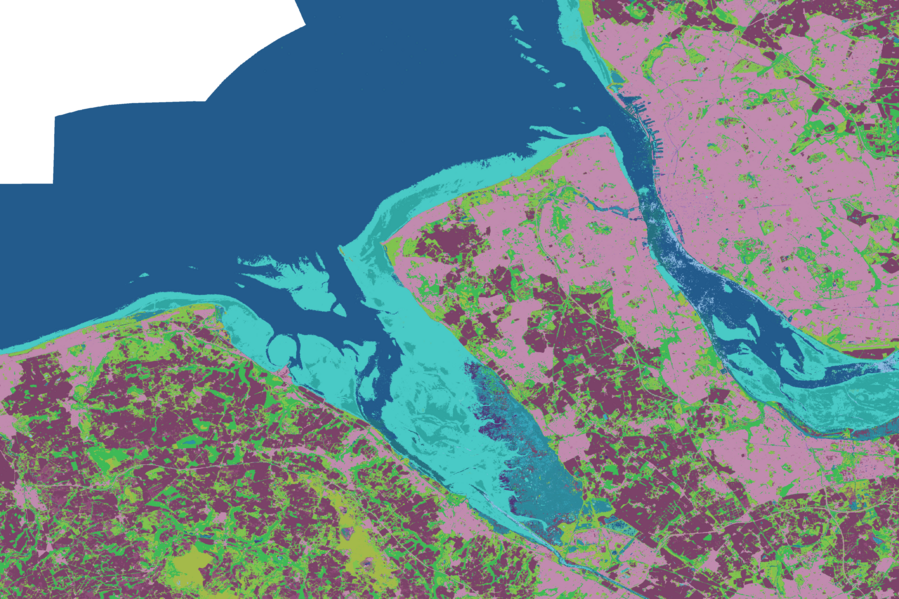
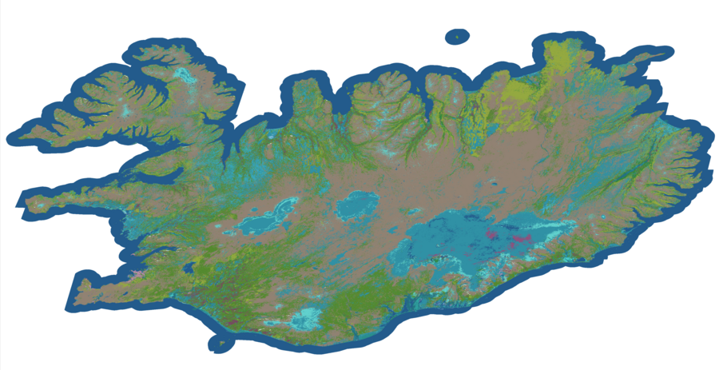

Weeknotes: 16th November 2026
Some embedded content from this post is not shown here (input) - consider seeing the original post.
Cambridge visit
I spent half the week in rather foggy Cambridge, having a good time catching up with colleagues in either the David Attenborough Building or Pages coffee shop.
Working remotely is all about communication, and so on my somewhat-monthly visits to Cambridge I try to pack in as many conversations as I can with people: so I had almost hourly meetings with people from the the computer lab, plant sciences, zoology and CCI member organisations like the IUCN; and then outside of that I sit in the common room in the David Attenborough Building and people who I didn't have a fixed meeting with will hopefully find me and say hello (which they did). I left Cambridge having had many interesting and exciting conversations that I can now try to work on before my return next month.
Learning about eBird via visitors from St Andrews
This time my trip was timed to coincide with visit by Professor Alison Johnston who was visiting the CCI with a set of her PhD students, and gave a wonderful talk entitled "Tracking nature with citizen science data" which did a great dive into eBird data and what insights they've managed to gain from digging into it. Unfortunately the talk wasn't recorded, but it looked at both what (and how) they can learn about birds (for example, much more detailed, both spatially and temporarily, species map) and and birders (estimating how skilled a birder is, which I assume then helps with confidence in their recordings).
As I've mentioned in recent weeknotes, my interest in this wasn't just because it was a fascinating exploration of the data, although it certainly was, but because I've been trying to use eBird data in my own habitat map work and hitting a few stumbling blocks. I'd actually come across a 2020 paper by Alison prior to realising she would be visiting Cambridge, and whilst that paper has some general guidelines about how to treat the eBird data, it didn't quite match my needs. In talking to Alison I now realise that this is in part because how you process the eBird data very much depends on what you're trying to do with it, so it's hard to give general advice that applies to all scientific endeavours.
In my case the challenge comes from two related factors. Firstly, as with GBIF, eBird observations are unevenly distributed, with there being way more than I need in somewhere like the UK, and fewer than I'd like in places like Madagascar or Minas Gerais - this leads to wanting to bias towards keeping as much data as I can due to that deficiency in the more important to protect parts of the world. However, birders, being human, are excited by seeing new or unusual things, and so where we have an excess of data we also see a trend to there being many more outlier observations, where a bird that happened to be passing through or just outside its natural habitat are recorded. This leads to the weird thing where including eBird data in the UK leads to a slightly better habitat map subjectively, but in the standard occurrence driven validation stage we do a lot worse, as our observation data is full of these outliers. So from this we need to try to throw away data. It's this tension that lead to me looking to see what others have done to solve this, and how I found Alison's paper originally, and why I then sat down for a chat with her about this problem in person.
One thing that became apparent during the conversation, and my following conversation with Matthew Gilbert, who is just starting a PhD with Alison, is that I was a little ignorant to the structure of eBird data. For instance, I knew that eBird data was organised into "checklists" as a unit of a set of observations, but I didn't realise that these are not just sets of observations with some time/location data. For instance, some lists are marked as complete, which means there is an implicit absence of any bird species that wasn't observed at that point (incomplete checklists are ones where you say you didn't record everything you saw). Now, you can't prove a negative, but with repeated sampling you could build up some confidence that a species is not in that area. This is different from observability, which Alison's PhD student Rachel Drake is working on, which tries to say which birds you could possibly see in that area, which is a more interesting definition perhaps, but still I'd been unaware of the implications of the checklist system. When talking about how do we deal with oversampling leading to all birds appearing everywhere, particularly as birding is somewhat gameified to encourage recording of outlier species, Alison also pointed to work by another of her PhD students, Louis J. Backstrom, who has data to show that the length of time a checklist is recorded over can be used as an indicator of how thorough the checklist is - the implication is that people will start a checklist sometimes in response to seeing an unusual bird, and so for me that might be a useful filter to try capture more typical species.
I'm very grateful to Alison and her students from spending time and sharing their insight, and it definitely helped increase my understanding of the data I'm using, but I felt that something still wasn't clicking at the time, and so...
I did some citizen science
I figured the best way to close the understand gap with eBird further was to get out there and have a go. I did three different walks over the weekend with my partner to go record what birds were around - we're fortunate to live by the coast so there's pretty much always something interesting bird wise to see.
The first thing to make clear is that trying to record a complete checklist is a lot of work. Perhaps because I'm not a very good birder admittedly, but I spent an hour trying to juggle my phone with an RSPB pocket guide of birds to try ensure I was recording the right thing, and because there are a lot of birds where we are, it meant there wasn't much time where we weren't doing this. So, a lot of respect to all the people who do this regularly to ensure people like me have data to work with.
I was surprised to hit some issues on my first outing: there were two birds that I identified that I couldn't enter into the app, even after I widened the search criterial to "all the world" (by default it tries to suggest birds likely to be where you are). Chatting with Matthew via email it looks like my app doesn't quite have the right language settings despite my attempts. Neither Pied Wagtail nor Goosander were to be found in the list, despite them being in my RSPB guidebook such that I was convinced I was looking at them. Eventually I figured out via looking up the scientific name that it is known otherwise as White Wagtail. Similarly we saw Brent Geese on our final walk of the weekend:

But these again were not under the name the RSPB used, and indeed this time the IUCN Redlist agrees, but we needed to use the name Brant (pale bellied). This reminded me of the question asked at Alison's talk about how these tools themselves can introduce biases into the survey data - my first walk I failed to record all that I saw due to naming problems. Now, I'm not an experienced birder, and over time one hopes you'd quickly learn these things and so overall it'll come out of the wash, but Alison did present some data to show that the rate of new eBird users outpaces the experience gain of those that stick around. I don't want to discourage people from eBird, it is clearly fantastic as a resource, but it shows how important it is to deal with user interfaces and localization in tools like this.
Still, after three days of getting data, and realising that I was recording travelling checklists (ones where I moved around) rather than stationary checklists (where you say in one place) yet in my science work I only use stationary checklists as I can't otherwise know where the birds were seen, explained perhaps why the eBird data I get to use is so biased to urban areas and national parks - places where people are more likely to sit in one spot and record. I'm sure that's not true of all stationary lists, but but I think I only began to appreciate that this might be something I need to worry about by doing some data collection myself.
This makes me wonder if I need some other policy around data-science: despite being a computer programmer that usually transforms the data, there is still huge benefit to getting ones hands dirty to do some collection work so as to properly appreciate what the data signifies, how much you should and shouldn't read into it, etc. A bit like how my colleague Shane Weisz sat the IUCN assessor redlist exam before trying to find ways to help use AI tools in assessments. In practice doing this for every bit of data I use is not a scalable solution, but doing it once in a while is good, and I should try find yet more ways to do a little field work now and then.
Habitat maps
Something my co-conspirator Aneesh Naik has been pushing me to do for a while, but was brought into context through Alison's talk was that machine learning models really need some measure of confidence to be supplied with them. Whilst I didn't disagree with this position from Aneesh, it's not something I'm that familiar with so I'd been concentrating on other aspects of building habitat maps. But I felt it was time to bite the bullet and have a go at it. After a couple of iterations, with some feedback from Aneesh, I built an map that acts as a measure of entropy for each pixel in my machine learning habitat map. If, like me a week ago, that means nothing to you, then it's an attempt not just to say "the probability of this pixel being the habitat we picked was high" but also folding in that it was a clear winner relative to all the other options, rather than there was several strong candidates all the same.
What was slightly mindblowing to me about the map was it was a reminder at how much nuance there is in the Tessera foundation model - I normally just see that rendered down to a small handful of habitat classes that make the map look very crude, but if you lift the hood on that you get something that shows the detail:

HabitatEntropyIn the above entropy map dark areas are certain, and bright areas less so. The obvious bits are the wetlands in the Dee Estuary, but you can also see it in the Burbo Bank offshore windfarm:
You can see Tessera really does have more to say than my simple habitat model allows.
I think this ties in with general thoughts I've had about this project to build a habitat map coded to the IUCN habitat classification scheme: despite having dozens of classes it is still a relatively crude simplification of the habitats of the world. Which is why in part it is being superseded by the IUCN's Global Ecosystem Typology framework, but for the biodiversity metrics I typically work on I still need to work with the older classification scheme, hence all this habitat map work is using that.
This was thrown into sharp relief when for fun at the end of the week I repointed my habitat pipeline at Iceland. This isn't because it's a particularly interesting place in terms of the biodiversity metrics I usually worry about, but I'm glad I did throw it into the mix as doing so made me realise the IUCN habitat classification scheme doesn't cover snow and ice! My map erroneously marks it all as wetlands as I don't have any data indicating what it should be, and I guess from space that's the best guess Tessera could do when not being told about the existance of solid water.

AI vs Michael
It was bound to happen, but I finally go a call to look at some output from code I wrote that was wrong. The person reporting it, who was more familiar with R, had made their own version of the code in R that seemed to work better, and they wondered why my code wasn't working so well. I take these reports quite seriously because most of the code I write in these biodiversity pipelines is used in multiple places, so a bug in one of the key components can have quite widespread implications.
However, as we chatted it turned out that it wasn't my code directly, rather they'd used AI to tweak my code, and it was this code that was broken. I've no inherent problem with ecologists trying to use AI to change my code: I want ecologists to have agency without needing to come to me for everything. This is why I developed Yirgaceffe, a geospatial DSL to try make the Python code look more like Numpy and other numerical libraries and hide away all the geospatial code. My vision was that this would make the code more accessible to someone with limited programming experience that had done the basic Python data-science course. Unfortunately this actually made things worse in this instance: the AI decided it didn't know Yirgacheffe, but did know GDAL and so replaced my concise code with something a lot more bloated and with more scope for errors, particularly as it still left the Yirgacheffe code at either end so the data was bouncing back and forth between different representations. Now I have to deal with all this code mess as I try to work out why it's got some alignment issues, so that we can get the pipeline code updated for this new project they're working on.
The root cause here is that the project has people who understand R and not Python, but the pipeline that I've helped build over several years is in Python. The answer has not been to then provide support for the new postdocs, hired on their ecology merit and knowing data-science principles, to get them up to speed on the code or Python, but rather to let AI tooling provide the way. I don't blame the postdoc coming to me with issues, this is a structural problem beyond their control. But at the same time I've no interest in playing this game, so I need to speak to the project leaders and work out a way of engaging that means I'm not playing catchup with postdocs using AI to change code. It might well be that my presence is now a hinderance on that project more than it is a benefit, particularly if they just want to move the code to R over time.
I do wonder if Yirgacheffe came along a little too late. I remember working for a thin-client not-for-profit that was trying to make it cheaper to deploy computing in parts of the world where a single PC per person was just not affordable. In the end we (and other attempts like OLPC) were overtaken by the mobile phone, which deployed everywhere much quicker. Perhaps my attempt to make the GIS code easier to understand for ecologists is actually the wrong solution with the advent of AI, where either they use AI or the project engages an RSE properly. Yirgacheffe still is something I'll use, as I like uncluttered code, but it was intended to help ecologists, and that seems to be a need that's not there.
This week
- Integrate all the eBird learnings I got from Alison and team to see if I can get eBird data into my habitat map pipeline without it causing all my validation results to crater.
- I said I'd try make a more harmonious version of the above AI change and check it does what they need correctly.
- On Thursday I'm going to POP4: A climate conference for arts, culture and music held over in Birkenhead. A very different take on climate work from the one I'm usually involved with, but I hope will be a nice change of pace, and I'll get to mix my dual hats of climate scientist and guitar maker.